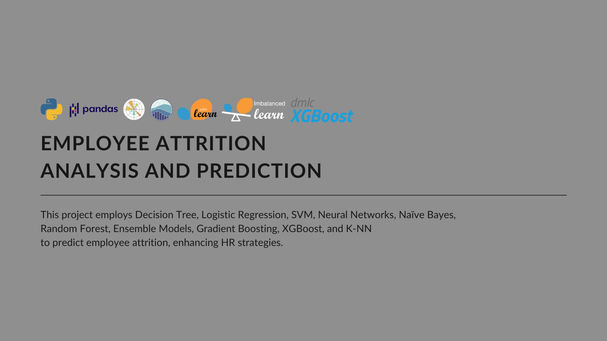

Employee Attrition Analysis and Prediction



Title
Employee Attrition Analysis and Prediction
Description
- Project Duration: 10/2023 – 12/2023
- Project Type: Data Analytics & Machine Learning
- Team: Alok Krishnan, Mangesh Patil, Shruthi Sunil
- My Role: Data Analyst – Performed EDA, decision tree and logistic regression modeling, and created a final PowerPoint with insights.
- Contribution: 100%
- Deliverables: Final PowerPoint presentation
🧩 PROJECT SUMMARY
Employee attrition is a major challenge for many organizations, leading to higher recruitment costs, loss of knowledge, and decreased morale.
In this project, we developed a machine learning solution to predict employee attrition using supervised classification models. By accurately forecasting which employees are at risk of leaving, organizations can proactively implement retention strategies, improve employee experience, and optimize workforce planning.
Our work covered the entire data science lifecycle, from data exploration to model deployment planning, resulting in a high-performing predictive model ready for integration.
📊 METHODOLOGY
We used a structured machine learning workflow covering exploratory analysis, data pre-processing, model selection and training, evaluation, and feature importance analysis to predict employee attrition effectively.
1. Exploratory Data Analysis (EDA)
We conducted a detailed exploratory data analysis to validate assumptions, understand feature distributions, and detect key patterns influencing attrition.
- Visual Findings:
- Distance from Home: Employees who lived farther from the workplace had a significantly higher attrition rate (Box Plot).
- Education Level: Higher education levels correlated with lower attrition rates (Bar Chart).
- Age: Younger employees were more likely to leave compared to older employees (Box Plot).
- Work-Life Balance: Poor work-life balance was associated with higher attrition (Bar Chart).
- Job Satisfaction: Lower job satisfaction strongly correlated with increased likelihood of leaving (Bar Chart).
- Years at Company: Employees with fewer years at the company showed higher attrition (Box Plot).
- Correlation Analysis:
- Top 3 Features with Highest Positive Correlation to Attrition:
- Distance From Home
- Number of Companies Worked
- Monthly Rate
- Top 3 Features with Highest Negative Correlation to Attrition:
- Total Working Years
- Job Level
- Years in Current Role
- Top 3 Features with Highest Positive Correlation to Attrition:
Visualizations such as bar plots, box plots, and correlation matrices were used to validate these patterns and support feature selection for modeling.
2. Data Pre-processing
- Data Encoding: Categorical variables were encoded to numerical formats using one-hot encoding techniques.
- Feature Scaling: Continuous variables were standardized to ensure model convergence and comparability across features.
- Data Balancing: Addressed class imbalance using oversampling techniques to improve the minority class (attrition = "Yes") representation.
- Data Partitioning: The dataset was split into training and testing subsets (80% train, 20% test) with a random seed for reproducibility.
3. Model Selection and Training
We experimented with a wide range of classification algorithms to identify the best model for attrition prediction:
- Decision Tree
- Logistic Regression
- Support Vector Machine (SVM)
- Neural Networks
- Naive Bayes
- Random Forest
- Ensemble Models
- Gradient Boosting
- XGBoost
- k-Nearest Neighbors (k-NN)
Each model was initially trained using default settings and then fine-tuned through hyperparameter optimization.
4. Hyper-parameter Tuning
Model performance was enhanced through:
- Grid Search: Exhaustively explored combinations of hyperparameters to identify the best-performing settings.
- Random Search: Randomly sampled hyperparameter space for faster optimization where exhaustive search was computationally expensive.
5. Model Evaluation
- Evaluation Metrics: Models were assessed using Accuracy, Precision, Recall, and F1-score to ensure balanced performance between false positives and false negatives.
- Classification Reports: Generated detailed performance summaries for each class.
- Confusion Matrices: Analyzed true positive, false positive, true negative, and false negative rates for deeper insight into model behavior.
Special focus was placed on F1-score to maximize both precision and recall for the minority attrition class.
6. Feature Importance Analysis
- Identification: Feature importance was extracted primarily from ensemble models such as Random Forest and Gradient Boosting.
- Interpretation: Top factors influencing attrition included:
- Overtime
- Stock Option Level
- Job Level
- Total Working Years
- Age
- Job Satisfaction
- Monthly Income
- Years at Company
These insights were used to formulate business recommendations to improve employee retention strategies.
💻 TOOLS
Python(Pandas,numpy,Matplotlib,Seaborn,Scikit-learn,imbalanced-learn,XGBoost)
PowerPoint
🔍 KEY INSIGHTS & FINDINGS
Our analysis revealed multiple important patterns and drivers of employee attrition:
Feature importance analysis confirmed that Overtime, Stock Option Level, Job Level, Total Working Years, and Age were the top contributors to attrition prediction across multiple models, particularly ensemble models.
Together, these insights provide critical focus areas for HR teams aiming to proactively retain high-value employees.
🚀 OUTCOMES & DELIVERABLES
Through our end-to-end machine learning solution, we successfully:
1. Developed a High-Performing Predictive Model
Built an SVM model with 98% accuracy and 0.98 F1-score, achieving balanced precision and recall, particularly for the minority attrition class.
2. Data-Driven Insights & Recommendations
Identified key factors influencing employee turnover and recommended strategic HR interventions, including optimized remote work, career growth programs, and improved work-life balance policies
3. Deliverables & Integration Plan
Delivered a comprehensive Python notebook, executive presentation, and deployment plan to integrate the model into production, enabling data-driven workforce management and proactive HR strategies.
The order of content may appear differently on mobile devices. For optimal viewing, I recommend using a desktop. (Order: right → left)